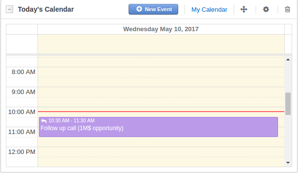
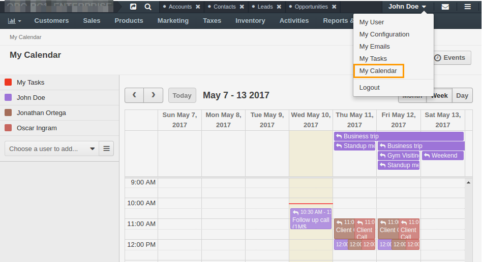
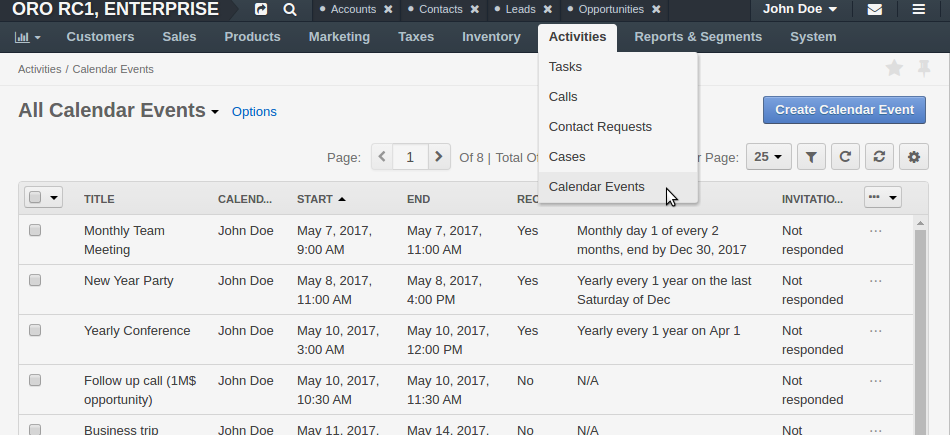
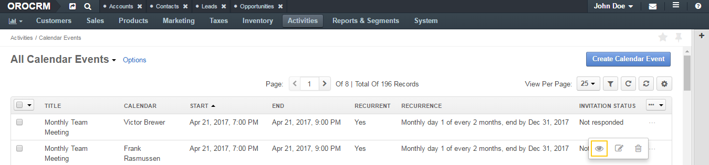

Calendar Events¶
In OroCRM and in OroCommerce Management Console, you can create and monitor planned activities, like a call with the customer, as calendar events. These planned activities may be linked to the related data in OroCRM and OroCommerce (e.g. a demo may be linked to the opportunity in OroCRM and to the request for quote in OroCommerce).
You can leverage the following actions for managing calendar events (see aggregated information here):
- Create a calendar event.
- View a calendar event.
- Edit a calendar event.
- Delete a calendar event.
- Reschedule a calendar event.
- Manage a calendar events context.
- Comment on the calendar event.
- Respond to the invitation in the calendar event with the Accept/Tentative/Decline status.
- launch the hangout call from the calendar event (available only when the google integration is enabled).
You can use most of these actions in the following perspectives:
Today’s Calendar widget
My Calendar page
The list of events on the All Calendar Events page, also known as Events Grid.
Activity section of the related items - records in OroCRM and OroCommerce that are related to the customer user activity and have been added as a calendar event context. The event may be related to the opportunity, quote, customer user, contact, account, lead, business customer, case, request for quote, and order.
